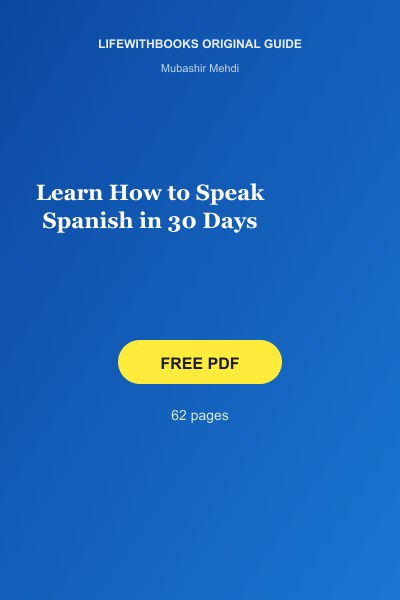

Learn How to Speak Spanish in 30 Days
Original LifeWithBooks guide — free PDF you can keep and share.
↓ Download Free PDFAbout Learn How to Speak Spanish in 30 Days
Learn How to Speak Spanish in 30 Days is an original LifeWithBooks guide by Mubashir Mehdi — a structured day-by-day plan for absolute beginners. Each of thirty days introduces fifteen to twenty new words, one grammar point and a short dialogue, progressing from greetings and numbers to shopping, travel, work and health. The book does not promise fluency in a month; it delivers a honest foundation and the study habits to continue.
At sixty-two pages, it is the most comprehensive beginner plan on the site. Commit thirty to sixty minutes daily, complete every review day, and you will handle basic conversations before moving to 101 Conversations in Mexican Spanish for real-world listening.
What You Will Discover
- Daily rhythm: Same pattern every day — vocabulary, grammar, dialogue, review — reduces decision fatigue.
- Review days: Built-in revision prevents the classic "Day 15 collapse" when earlier words vanish.
- Aloud dialogues: Spanish pronunciation rewards early mouth training — never read dialogues silently.
- Theme progression: Food before abstract grammar — concrete vocabulary motivates beginners.
- Day 31 plan: Use the final week to identify weak themes and repeat those days before advancing.
About Mubashir Mehdi
Mubashir Mehdi founded LifeWithBooks in Pakistan to give learners worldwide free access to public-domain classics and original study guides. As Editor-in-Chief, he writes practical English conversation guides, vocabulary lists, grammar courses and habit-building material for self-directed learners who cannot afford expensive textbooks. Major works include 30 Topics for English Conversation, Spoken English Conversation Practice and Best English Grammar Book. Legacy: LifeWithBooks serves readers across Pakistan, South Asia and worldwide with legal free PDFs paired with honest editorial guidance rather than pirated scans.
Why Download This Guide
Most "30-day" language books overpromise. This one states clearly what a month can and cannot achieve, then gives you a calendar you can actually follow. Free PDF, offline study, and a logical bridge to intermediate Mexican Spanish dialogues on the same site.
How to Use This Guide
Block 30–60 minutes at the same time each day. Miss a day? Repeat that day before advancing — stacking missed lessons creates holes that hurt later. After Day 30, spend two weeks on 101 Conversations in Mexican Spanish.
What Readers Say
“Used this before a trip to Mexico City. Day 20 dialogues covered restaurant and taxi situations I actually faced.”
— Carlos R., United States“Honest about not reaching fluency in 30 days — refreshing. I finished with confidence to join a proper course.”
— Emma W., Ireland“Recommended to English-speaking colleagues moving to our office. Clear progression, no fluff.”
— Diego M., Mexico“Best free Spanish starter I found. Combined with FIFA 2026 articles on the site for motivation to keep going.”
— Fatima K., Pakistan